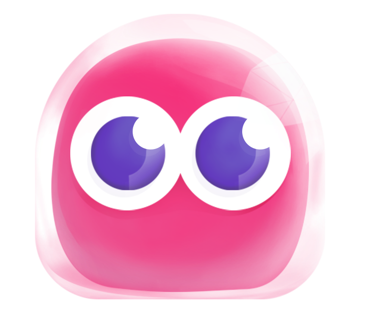
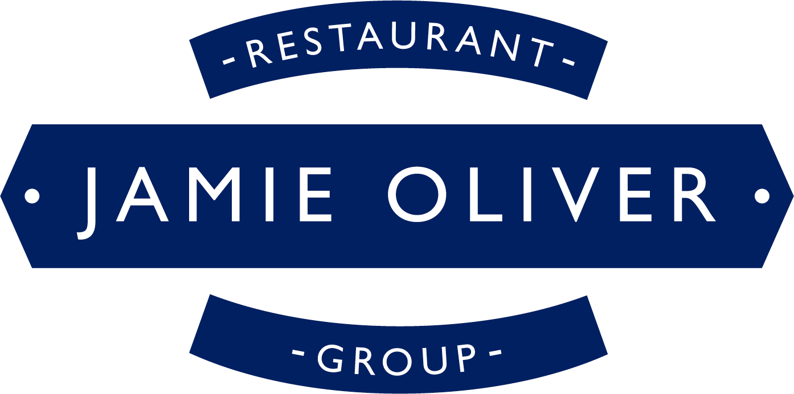

Sadie Freeman
Golang Developer
&
Web Dev Instructor
I used to work for Jamie Oliver's Restaurant Group in London managing the Learning & Development program, but in 2017 I retrained as a developer through the Lighthouse Labs Web Development Bootcamp in Vancouver.
Working for the past two years as primarily a Golang developer, I have returned to Lighthouse Labs as an instructor, joined the backend team at Dapper Labs, and traveled to Ethiopia to teach code.
I always carry a bag of dice and a bottle of liquid chalk around with me.
Dapper Labs
July 2019 - Present
Backend Engineer
I'm currently working on NBA Top Shot, a new digital platform for basketball fans to collect, trade and own some of the greatest moments in league history on blockchain.
I'm part of the team that has built the game from the ground up, using Go, gRPC, and GraphQL.
Lighthouse Labs
November 2018 - Present

Instructor, Mentor
I instruct the Web Development bootcamp on a casual basis. Lectures include anything from Express, to CSS to SQL. I also ran the Intro To Front End part time course for several semesters.
Biba Ventures
June 2018 - June 2019
Junior Backend Developer
I wrote backend services in Golang using gRPC, PostgreSQL, Google Cloud, and several third-party APIs.
I also helped build a data warehouse backed by BigQuery by writing pipelines in Go using Google's DataFlow service.
Jamie Oliver
Restaurant Group
March 2013 - February 2018
Learning & Development Analyst
My role changed vastly over the course of my time at Jamie's, but I started out in admin support for recruitment, and by the end of my five years I was managing a team in the Learning & Development department which delivered 100+ workshops a year for leadership and management training. I also implemented an online Learning Management System and designed and developed online training materials.
Volunteering in Ethiopia
In June 2019 I travelled to Ethiopia to teach a group of young women Web Development with the Entoto Project.
Here's a blog I wrote about the experience.
Women Who Code - CONNECT NYC
In December 2019 I ran a workshop at a conference in New York for Women Who code. It was an hour long workshop on Blockchain and Golang for Beginners

Just went from not a whisper of a clue how to grasp #blockchain to understanding enough to be excited about it from @SadeF at #WWCODE #CONNECTNYC (PS I voted dogs)
— Lauren Piontek (@DevByLP) December 5, 2019
See you at the blockchain in health care talk! pic.twitter.com/F9aJyu89jC
FlexBox Fun
A Flex Box playground I made for my students taking the part-time course at Lighthouse Labs. The Flexbox week can be a bit of a steep learning curve so I created an interactive playground for it.